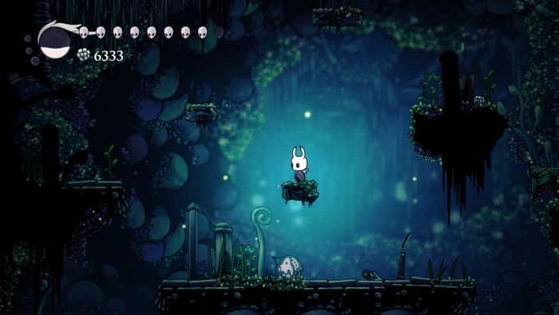
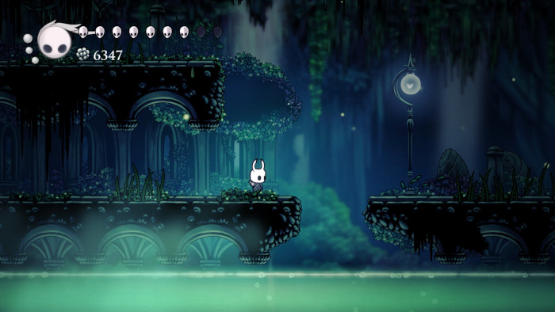

Caminho Verde
O Caminho Verde é uma área vibrante e cheia de vida, dominada por flores gigantes, árvores pendentes e folhagens densas. Raios de luz atravessam as copas das árvores, criando um efeito mágico e sereno.

Solo Irregular e Cascatas
O chão é coberto por raízes e pequenas elevações, com canais de água e pequenas cascatas que refletem tons verdes e azuis. A região combina beleza natural com desafios de plataforma, proporcionando exploração e encantamento.


Feito por Antonio Marcos
Gmail: antoniomarcoscraft@gmail.com